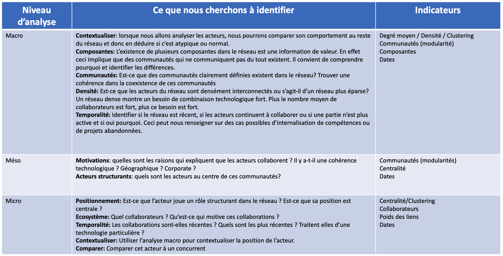
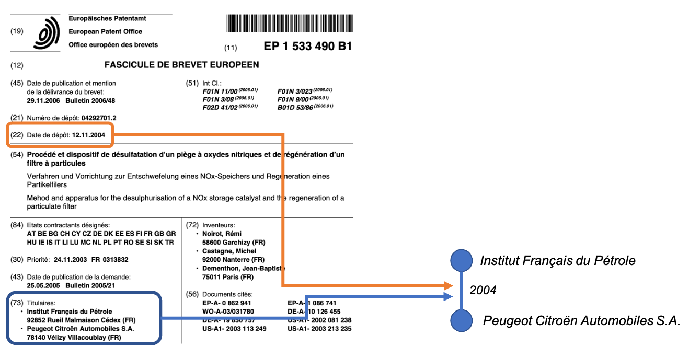
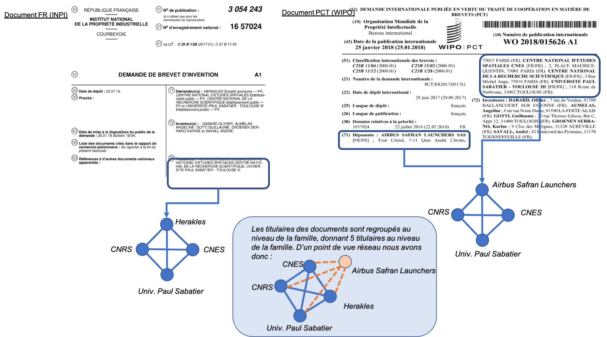
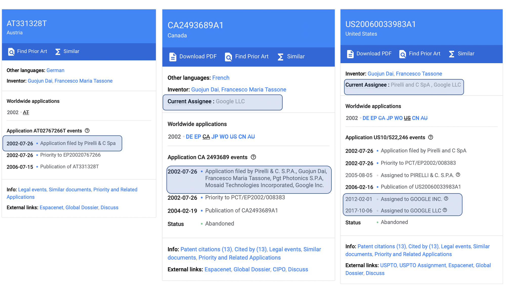
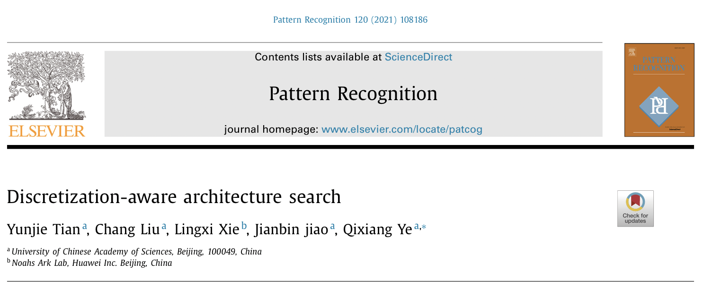
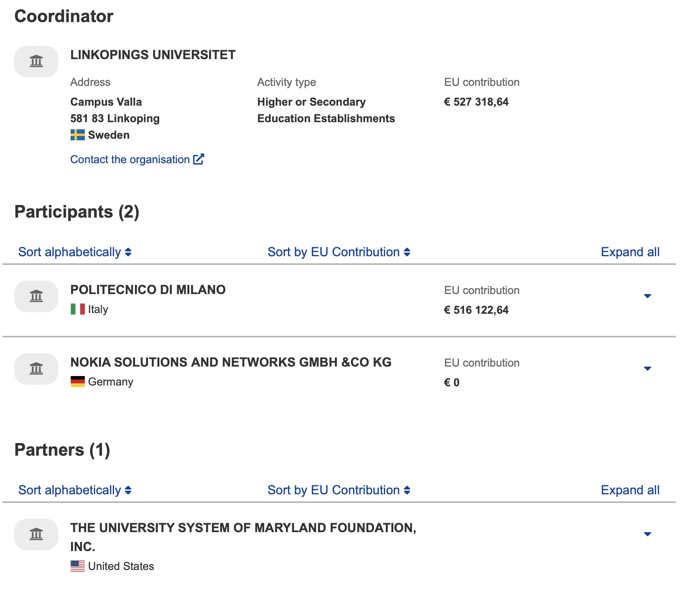
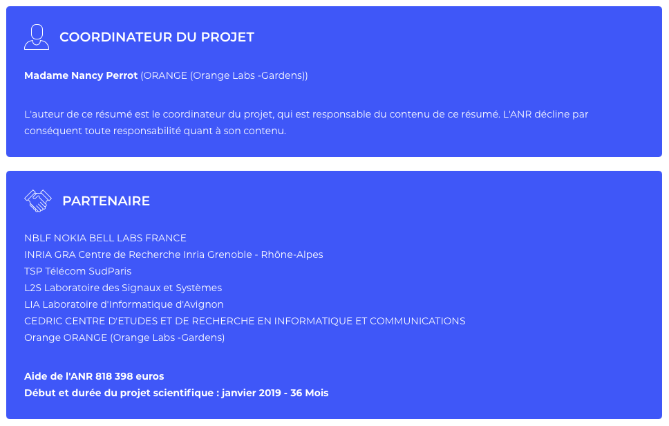

Collaboration Networks
Collaborations
In strategic technological intelligence, collaboration is a high-value information signal. A technological collaboration implies pooling technical capabilities, which are at the core of firms’ competitive advantage. Observing two actors combining capabilities is therefore a strong signal of technological need.
Collaboration among innovative firms has intensified over several decades (Duysters and Hagedoorn 2000). As technologies become more complex, it is increasingly difficult for one actor to master all required techniques and technologies. As a result, actors build links with others, sometimes even competitors, in order to innovate (Hagedoorn and Narula 1996; Narula and Hagedoorn 1999). Collaboration has been identified as beneficial for firms (McEvily and Marcus 2005), innovation (Kogut and Zander 1992), and growth/survival (McEvily and Marcus 2005; Watson 2007).
The discussion above concerns mainly technological collaboration, where each firm contributes technical input. But collaboration can also be financially motivated. A firm with technical capability but insufficient funds may partner with another actor to finance research. In some data sources, distinguishing motivation is difficult. For example, in patents, having two assignees does not imply equal technological contribution; one actor may be listed due to financial participation. The distinction is clearer in funded research projects where the funder is explicitly identified and participants are expected to provide technological contributions (ANR and European projects).
In a knowledge economy, a firm’s key asset is the knowledge it controls and mobilizes for market positioning (Penrose 1959). From a Knowledge-Based View, collaboration is risky because it opens access to strategically valuable knowledge (Penrose 1959). In that sense, collaboration is a strong indicator of real technological need when alternatives are limited.
When competing firms collaborate and even share intellectual property, this typically indicates that both actors could not obtain the required capability through easier alternatives. In this chapter, collaboration is analyzed mainly through a knowledge-flow lens. These flows may include non-strategic information (tool recommendations, organizational practices, managerial insights) as well as core technical knowledge. They can diffuse from collaborator to collaborator and propagate through the network.
This propagation can be beneficial in two ways:
- Better information can improve innovation across the network and ultimately benefit users.
- Incoming new ideas improve an actor’s own inventive potential.
An actor that is too closed may face low diversity of ideas, reducing creativity. Repeated collaboration can increase productivity because actors work better together over time, but it can also reduce creativity.
These dynamics are visible in network representations. Strategically, they reveal how actors organize external technological sourcing.
As with any network, we follow a three-step analysis, with a clear objective at each level.

For more detail on collaboration effects, see Van Der Pol (2016).
Analyzing a Collaboration Network
This section addresses collaboration networks between actors. Such networks can be built from multiple data sources, so we first discuss source-specific biases and limits.
Data and Network Construction
This subsection explains which information is used to generate collaboration networks from different data sources, and highlights limits and complementary signals relevant for analysis.
Patents
Patent data sources are numerous and differ widely in coverage and cleaning quality. Patent office data are generally available for free, but often do not fully reflect ownership changes tracked in specialized databases. Commercial sources (e.g., Questel Orbit, Orbis-IP) aggregate multiple offices and resolve many issues related to firm name changes and parent-subsidiary structures. Lower-cost alternatives such as PATSTAT exist but require more manual affiliation cleaning. Free sources such as Google Patents can also be useful.
In what follows, we stay close to primary sources (office PDFs, Espacenet, Google Patents) to avoid provider-specific adjustments. The key point is to be aware of potential biases and verify them explicitly.
In the simplest form, a collaboration edge is created when two or more actors appear on the same patent document as assignees.

Patent analysis is often done at the family level (all unitary documents covering one invention). This may create issues when assignees differ across documents within the same family.

The most critical case is patent transfer. A single document in a family may be sold, making the buyer appear as a family assignee without any original collaboration.

A patent co-assignment link is interpreted as pooling technical capabilities and implies knowledge flow. Because it includes shared intellectual property, it is generally a strong tie.
Scientific Publications
Scientific outputs are also widely used for collaboration analysis. Here the key entities are author affiliations, not the authors themselves (co-author networks are treated later).
Publication data are often behind paywalls (Scopus, Web of Science), but free sources exist with different coverage (e.g., ScanR, HAL-linked records, arXiv preprints). Commercial providers usually offer cleaner affiliation matching.

As with patents, we can add publication date to collaboration edges. However, collaboration necessarily predates publication because research and publication take time. Compared with patents, affiliations (especially universities/research institutes) are often more stable.
A publication collaboration tie is usually weaker than patent co-assignment because it does not involve direct IP ownership. It still indicates shared work and knowledge flow.
European Projects
A European project is research funded fully or partly by the European Commission, usually in response to calls aligned with EU priorities (e.g., links with China, technological standardization).
These projects generally include diverse actors (multinationals, SMEs, startups, universities, research institutes). Although all participants contribute, they are not necessarily in direct bilateral contact. Knowledge flow should therefore not be over-interpreted as universal across all pairs.
Data are available through the European Commission (CORDIS). Raw files provide detailed project-level information (partners, dates, funding amounts, country), but no full affiliation cleaning.
Unlike patents and publications (outputs), European projects are research inputs and should be interpreted accordingly.

Project start and end dates are available and provide clearer temporal anchors than publication/patent dates.
A project tie indicates shared contribution to a project objective. It does not necessarily imply strong direct knowledge flow between all participant pairs. Complementary publication evidence is useful to refine interpretation.
ANR Projects
ANR-funded projects are similar to EU projects in structure. Data are available on ANR project pages and as CSV/XLSX files (e.g., via data.gouv.fr), including coordinator, partners, project start date, duration, and additional fields such as abstracts.

ANR project ties should be interpreted with the same caution as EU project ties: they indicate knowledge combination potential and possible knowledge flow, not guaranteed direct bilateral transfer.
On Combining Sources
Given multiple sources, it is tempting to build one global collaboration network. But combining sources implicitly treats all links as equivalent (patent, EU project, publication, ANR), which creates interpretation issues.
Main risks:
- One project can produce multiple publications, inflating edge weights if each source event is counted independently.
- Patent co-assignment is less frequent than publication/project collaboration; its stronger, rarer ties may be diluted in denser mixed-source networks.
- The key interpretation problem is semantic: what does the combined network actually represent? Mixed networks are useful to map an ecosystem visually, but network indicators become harder to interpret unless source-specific analyses are run in parallel.
For an example combining scientific publications and patents, see Pol and Rameshkoumar (2018).
Analyzing a Collaboration Ecosystem
To understand innovation emergence in a domain, collaboration network analysis is essential. It helps identify actors open to collaboration, communities with repeated collaboration patterns, and each actor’s local ecosystem. Combined with a standard domain analysis, this informs external technological sourcing strategies.
Here we analyze 5G collaboration networks from Scopus affiliations. We compare:
- Publications with funding acknowledgment.
- Publications without funding acknowledgment.
Scopus identifies funding either from author declarations or acknowledgment text. The dataset includes 22,532 scientific documents between 2010 and 2021: 7,435 with funding and 13,107 without.
Macro Analysis of the Collaboration Network
Figure Figure 8 shows the affiliation collaboration network built from non-funded publications only. An edge indicates at least two distinct co-publications (edge weight >= 2).
The network has a single connected component (no isolated collaboration clusters). It contains 526 actors and 1,185 collaboration links, with mean degree 2.25. Density is low (0.009) and clustering is high (0.44), indicating clear community structure. Modularity (0.697) identifies 8 communities.
No single actor structures the whole network; instead, central actors are mostly central within their own communities. The global structure is driven by interconnection of well-defined communities rather than a strict hierarchical architecture.
Meso Analysis
Communities identified at macro level suggest a geographic logic. To test this, nodes are colored by country in Figure Figure 9.
Nationally structured communities become more explicit. Industrial actors often act as gatekeepers between national research communities. A salient case is the Japanese cluster, weakly connected to the rest of the network, with private actors (e.g., NEC, Fujitsu) bridging to external communities.
Universities are central within national communities, while large industrial actors are more central at the global network level (e.g., Huawei, Ericsson, Nokia, IBM, Intel).
The French community is relatively inward-looking, with links to the wider network primarily mediated by industrial actors (Orange Labs, Thales, Montimage) plus Grenoble. The Japanese community is also relatively peripheral, while the US community is more distributed and the Chinese community is structured around major universities strongly connected internationally.
Micro Analysis of the French Collaboration Subnetwork
Figure Figure 10 shows links involving at least one French actor.
CNRS is highly central and connected to many universities. Major structuring actors include Rennes, Grenoble, and INRIA. Industrial actors (e.g., Thales, Orange; and at European scale Nokia, STMicroelectronics) are present but often less interconnected with each other than with universities.
Each industrial actor tends to have its own local collaboration ecosystem around specific academic partners. Huawei appears in a more peripheral position through links with Rennes and Thales. US actors are largely absent from this French subnetwork.
Comparison with the Funded Network
We now compare the non-funded network with the funded network (multi-affiliation publications with explicit funding acknowledgment).
Visual comparison suggests both networks have one giant component. The funded network appears denser, with the French community closer to the broader European cluster. The Japanese community is less visible. To validate visual interpretation, we use summary statistics.
Table Table 1 compares funded, non-funded, and combined networks.
| Metric | Funded Network | Non-Funded Network | Combined |
|---|---|---|---|
| Actors | 587 | 526 | 755 |
| Links | 1731 | 1185 | 2494 |
| Density | 0.010 | 0.009 | 0.009 |
| Centralization | 0.0045 | 0.0055 | 0.0033 |
| Clustering | 0.511 | 0.440 | 0.470 |
| Triangles | 1919 | 716 | 2903 |
| Diameter | 10 | 10 | 9 |
| Average path length | 3.64 | 3.886 | 3.49 |
| Mean degree | 2.9 | 4.5 | 6.6 |
| TPT | 3.269 | 1.361 | 3.845 |
The funded network includes 61 more actors and 546 more links than the non-funded network, indicating both entry of new actors and additional collaboration among existing actors. Higher clustering and triangle counts indicate stronger local densification in funded collaborations.
The combined network (funded + non-funded) has 755 actors and 2,494 links, with stronger overall connectivity.
The original LaTeX chapter references an additional figure (5G_scopus_players_added_through_financing) stored outside this workspace. That file is not available in the current project, so it is not embedded here.
A set of examples of actors appearing only in one network is shown below (as in the source chapter):
| Actors Exclusive to Non-Funded Network | Actors Exclusive to Funded Network |
|---|---|
| AIRBUS EP | ECOLE NORMALE SUPERIEURE PARIS |
| CEMEF FR | INST MINES TELECOM FR |
| DISPOSABLE LAB | ISEP FRANCE |
| LRI UNIV PARIS SUD FR | ITER |
| METEOR NETWORK | OMMIC S A S BREVANNES FRANCE |
| TECHNOLOGICAL RES INST SYSTEMX | TELECOM RES DEVELOPMENT LANNION |
| UNIVs FRANCHE COMTE | VIRTUAL OPEN SYSTEMS FRANCE |
| UNIVs AIX MARSEILLE | WHEN AB PARIS FRANCE |
| UNIVs LYON FR |